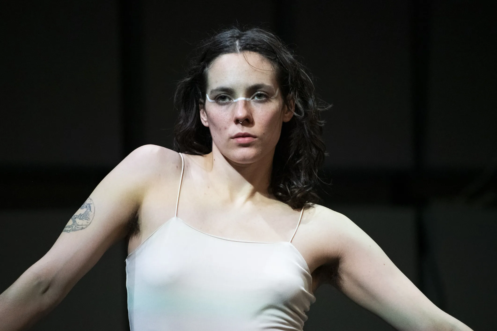

in to lay a track, five dancers explore the traces that their movements leave behind. on their own bodies, in space, on each other - solo, in pairs, as a collective body. Through forming the body from the inside and uncovering it from the outside, this piece is working with the question of body politics.
the performers leave shells behind, give and receive impulses and work with the ever-changing arrangement of their bodies in space. The choreographic work is characterized by the (violent) gaze on bodies and by the power of queer union.
through a shared process of artistic research, the five performers investigate how the body inscribes traces, makes relationships perceptible, and generates meaning. within this interplay of inquiry and embodiment, a new movement vocabulary takes shape, unfolding between reflection and sensation.
performed at MUK.Theater, Vienna (AT), Dance.Identity.Festival, Eisenstadt (AT), NOVÉ GENERACE Festival, Prague (CZ), Brunnenpassage, Vienna (AT)
Concept: Leonie Frühe
Choreography: Leonie Frühe in collaboration with the dancers
music:
photo credits: